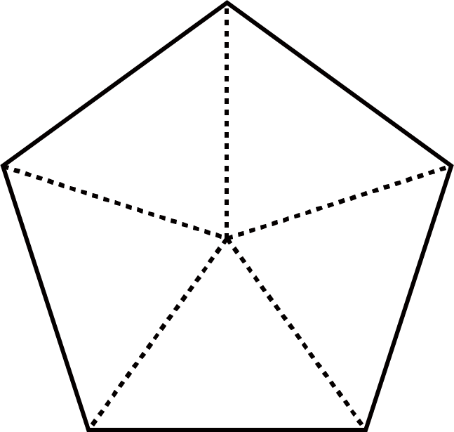

- 문제 1
- 문제 2
- 문제 3
- 문제 4
- 문제 5
- 문제 6
- 문제 7
- 문제 8
-
색칠한 부분과 색칠하지 않은 부분을 분수로 나타내 보시오.
- 색칠한 부분
-
- 2
- 4
- 색칠하지 않은 부분
-
- 2
- 4
- 색칠한 부분
-
- 3
- 5
- 색칠하지 않은 부분
-
- 2
- 5
-
부분을 보고 전체를 완성하고, 그린 부분을 분수로 나타내 보시오.
DVD 개발물 -
주어진 분수만큼 색칠하고, 색칠하지 않은 부분을 분수로 나타내 보시오.
DVD 개발물 -
- 3
- 5
 -
수영이가 와플을 똑같이 8조각으로 나누어 전체의먹었습니다. 수영이가 와플을 몇 조각 먹었는지 구하시오.만큼
- 1
- 4
구해야 할 것 주어진 것조각2 -
그림을 보고 남은 부분을 분수로 나타내어 보시오.
- 5
- 6
- 3
- 8
-
색칠한 부분이 나타내는 분수가 다른 것을 고르시오.
ㄱㄴㄷㄹㄹ -
효리네 텃밭에 파, 당근, 고추를 심었습니다. 전체에 대하여 당근을 심은 부분의 크기를 분수로 나타내어 보시오.
파당근고추(1) 전체를 똑같이 몇 칸으로 나누었는지 구하시오.칸16(2) 당근은 몇 칸에 심었는지 구하시오.칸6(3)전체에 대하여 당근을 심은 부분의 크기를 분수로 나타내어 보시오.- 6
- 16